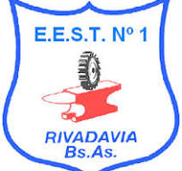

<!DOCTYPE html>
<html lang="en">
<head>
    <meta charset="UTF-8">
    <meta name="viewport" content="width=device-width, initial-scale=1.0">
    <title>Geolocalizacion</title>
    <script src="https://unpkg.com/leaflet@1.9.4/dist/leaflet.js"
     integrity="sha256-20nQCchB9co0qIjJZRGuk2/Z9VM+kNiyxNV1lvTlZBo="
     crossorigin=""></script>
    <link rel="stylesheet" href="https://unpkg.com/leaflet@1.9.4/dist/leaflet.css"
    integrity="sha256-p4NxAoJBhIIN+hmNHrzRCf9tD/miZyoHS5obTRR9BMY="
    crossorigin=""/>
    <link rel="stylesheet" href="../css/estilos.css">
    <style>
        #map { height: 500px;}
    </style>
</head>
<body>
    <div id="map"></div>

    <script>
        var map = L.map('map').setView([-35.4891431, -62.9756327], 15);

        L.tileLayer('https://tile.openstreetmap.org/{z}/{x}/{y}.png', {
    maxZoom: 19,
    attribution: '&copy; <a href="http://www.openstreetmap.org/copyright">OpenStreetMap</a>'
    }).addTo(map);

    var marker = L.marker([-35.49463, -62.965211]).addTo(map);
    var marker2 = L.marker([-35.489276, -62.97565]).addTo(map);
    var marker3 = L.marker([-35.492368,  -62.985896]).addTo(map);
    marker.bindPopup("<b>Escuela Tecnica N°1</b><br><br>").openPopup();
    marker2.bindPopup("<b>Plaza Colón</b><br><br>").openPopup();
    marker3.bindPopup("<b>Hospital de Rivadavia</b><br><br>").openPopup();

    marker.addEventListener('click', function(){
        const speech = window.speechSynthesis;
                            speech.volume = 1;
                            speech.rate = 1;
                            speech.pitch = 1;
                            const utter = new SpeechSynthesisUtterance();
                            utter.text = "Escuela Tecnica Numero 1";
                            speech.speak(utter);
    });
    marker2.addEventListener('click', function(){
        const speech = window.speechSynthesis;
                            speech.volume = 1;
                            speech.rate = 1;
                            speech.pitch = 1;
                            const utter = new SpeechSynthesisUtterance();
                            utter.text = "Plaza Colon";
                            speech.speak(utter);
    });
    marker3.addEventListener('click', function(){
        const speech = window.speechSynthesis;
                            speech.volume = 1;
                            speech.rate = 1;
                            speech.pitch = 1;
                            const utter = new SpeechSynthesisUtterance();
                            utter.text = "Hospital de Rivadavia";
                            speech.speak(utter);
    });

    function onMapClick(e) {
    //alert("You clicked the map at " + e.latlng);
    console.log("click "+e.latlng);

}

map.on('click', onMapClick);
    </script>
</body>
</html>